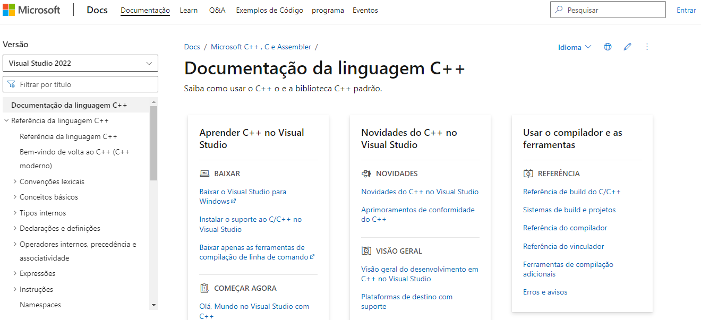
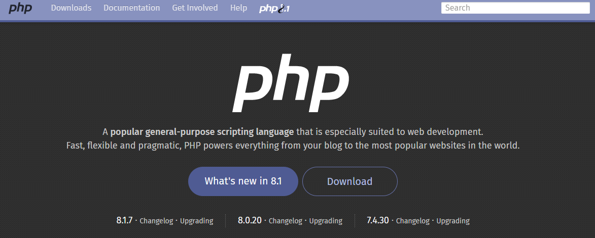

Python é uma linguagem de programação de alto nível e para propósitos diversos. Ela pode ser
utilizada
para múltiplas tarefas, desde a análise e visualização de dados até o desenvolvimento,
prototipação e automação web.
A linguagem Python é muito popular entre desenvolvedores de software, pois funciona muito bem
como uma linguagem de
scripts. Adicionalmente, ela permite que seus usuários utilizem diferentes paradigmas de
programação, incluindo
linguagens de programação funcionais, processuais, imperativas e orientadas a objetos.
Outra característica importante da linguagem Python é que ela é de código aberto, isto é, ela
permite que os programadores
modifiquem seu código-fonte para que se ajuste às suas necessidades.
Além de tudo isso, é mais simples aprender Python do que as outras linguagens de programação,
graças à sua sintaxe, que é familiar
à língua inglesa. Se você deseja começar sua carreira como um desenvolvedor de programas,
aprender a programar em Python é um ótimo
ponto de partida.
Para ajudar ainda mais, a demanda por desenvolvedores Python é crescente no mercado. É possível
escolher entre várias linhas de
trabalho, seja como cientista de dados, engenheiro de softwares e pesquisador de inteligência
artificial (IA).

C# é uma linguagem de programação orientada a objetos – um modelo que organiza o design de
software ao redor de objetos.
A linguagem de programação C# é uma das principais no mercado devido ao seu rápido desempenho e
estabilidade melhorada.
Essa linguagem de programação também é mais fácil de ser aprendida do que as suas antecessoras,
como C e C++, pois possui uma sintaxe
mais simples e uma hierarquia de classe bem definida.
Tendo começado como uma linguagem Microsoft para seu framework .NET, hoje em dia a linguagem de
programação C# é compatível com Windows
e Linux. Sendo assim, é a melhor linguagem de programação para aprender a desenvolver aplicações
desktop baseadas em GUI (graphical user
interface).
Programadores também podem utilizar a linguagem C# em vários ambientes, incluindo softwares
móveis e corporativos. Em outras palavras,
desenvolvedores que utilizam C# podem criar aplicativos para Android e iOS, além de desenvolver
jogos em 2D e 3D no Unity.
Profissionais com conhecimento em linguagem C# estão em alta demanda, já que muitas empresas de
software estão buscando por
programadores com essa especialidade. Alguns dos melhores empregos para desenvolvedores em C#
incluem ser desenvolvedor de aplicativos
móveis e engenheiro de software

A linguagem de programação C++ é uma versão melhorada da C, e uma das mais populares linguagens
na área de ciências da
computação. Além disso, sua versatilidade faz com que a C++ seja uma das linguagens de
programação mais indicadas para se
aprender.
Sua natureza rápida e potente permite que desenvolvedores criem aplicações com excelente
desempenho, como videogames, softwares
gráficos e navegadores web.
A linguagem de programação C++ combina características de linguagens de baixo e alto níveis,
fazendo com que ela seja ideal para
programação de sistemas, ainda permitindo abstrações para projetos menores. Adicionalmente, a
C++ é uma linguagem de programação
multiparadigma, suportando programação imperativa, genérica e OOP.
Vale notar que aprender C++ pode ser desafiador para iniciantes, pois ela possui uma sintaxe
mais complexa do que outras linguagens
de programação.
Em termos de oportunidades de trabalho, ter proficiência em C++ é necessário para muitos
profissionais de TI, como desenvolvedores de
software e arquitetos de programação.
Atualmente, a demanda por desenvolvedores em C++ está em crescimento, já que se trata de uma das
linguagens de programação mais difíceis
de se aprender. Lembre-se de destacar suas habilidades e competências em linguagens de
programação no seu currículo para atrair as melhores
ofertas de emprego.

JavaScript, juntamente com HTML e CSS, é a melhor linguagem de programação para aprender
desenvolvimento web front-end. 97,8% de todos
os sites no mundo utilizam JavaScript para seu desenvolvimento client-side (a interface que é
visível para os visitantes).
Isso faz com que essa seja a linguagem de programação mais popular para esses casos.
O JavaScript geralmente é utilizado para melhorar a interatividade de páginas na internet. Essa
linguagem de programação permite que os
desenvolvedores web adicionem elementos dinâmicos nas landing pages, como gráficos animados,
botões clicáveis e efeitos que aparecem quando
passamos o mouse sobre alguma sessão específica do site.
A linguagem JavaScript não é útil apenas para criação de sites, mas também é excelente para
desenvolvimento de aplicações web, já que oferece um
design muito intuitivo.
De modo geral, a JavaScript é uma linguagem de programação relativamente fácil de aprender,
tornando esta a escolha perfeita para quem está
planejando se tornar um desenvolvedor web. Desenvolvedores JavaScript também podem se inserir no
mercado de trabalho como designers UI/UX,
desenvolvedores full-stack e engenheiros de software.

PHP é uma das primeiras linguagens de programação back-end que os desenvolvedores consideram ser
essencial aprender.
Além disso, o PHP é utilizado por 78,1% de todos os sites na internet, já que é a linguagem
primária do WordPress.
Comparada a outras linguagens de programação, o PHP é fácil de aprender. Além de ter um extenso
conjunto de recursos disponíveis para
inciantes, a sintaxe PHP é elementar.
Adicionalmente, esta linguagem de programação oferece excelentes frameworks PHP para o
desenvolvimento de sites e aplicações. Alguns dos
melhores e mais conhecidos são Laravel, Symfony e CodeIgniter.
Em termos de oportunidades de trabalho, a linguagem de código aberto PHP segue em grande
demanda, mesmo sendo uma das mais antigas do mercado.
Programadores PHP podem utilizar esta linguagem para escrever scripts via linhas de comando, bem
como scripts server-side (na interface do servidor),
além de desenvolver aplicações desktop.

A linguagem de programação Swift está entre uma das mais recentes a surgir no mercado.
Inicialmente, quando foi lançada, a Swift era uma
alternativa à Objective-C – a principal linguagem para produtos Apple.
Os desenvolvedores foram passando a utilizar a linguagem Swift porque ela oferece recursos mais
modernos, como programação simultânea ou
concorrente, e gerenciamento automático de memória. Também é muito mais rápido e simples de
escrever em Swift do que em Objective-C.
Como resultado, a linguagem de programação Swift é certamente a melhor opção para
desenvolvimento de produtos Apple e uma das alternativas
de programação que mais rapidamente cresce no mercado.
Se você está interessado em desenvolver produtos e programas para dispositivos Apple, considere
escolher a linguagem de programação Swift
para aprender primeiro.
Além disso, a especialidade em desenvolvimento de apps iOS está em alta demanda no mercado de
trabalho, já que a Apple segue sendo a maior
geradora de lucros e rendimentos no ramo de indústria de smartphones.

Java é uma linguagem de programação exclusiva que pertence à Oracle. Trata-se de uma linguagem
de programação de alto nível e para propósitos
diversos, permitindo que os desenvolvedores criem todo e qualquer tipo de aplicação com
facilidade.
Amplamente conhecida como uma linguagem do tipo “escreva uma vez, rode em qualquer lugar”, os
códigos Java podem rodar sem problemas em
qualquer sistema operacional, independente do ambiente em que foram originalmente escritos.
A linguagem Java é relativamente simples. Isso se deve à sua sintaxe, que possui familiaridade
com tarefas do mundo real e com estruturas
orientadas a objetos. Além disso, os novos frameworks Java, como Spring e Hibernate, tornam a
linguagem ainda mais conveniente para que os desenvolvedores construam aplicações de diversas
naturezas.
Desde a engenharia de softwares até o desenvolvimento web back-end, passando pela ciência de
dados e pelo big data, é possível fazer tudo
usando Java. Adicionalmente, esta linguagem de programação é comumente utilizada em serviços
financeiros devido à sua segurança robusta.
Programadores Java também têm facilidade em aprender novas linguagens de programação devido às
suas habilidades, que são transferíveis. Por
esse motivo, Java pode ser considerada a linguagem perfeita para ser a primeira aprendizagem de
um entusiasta da programação.
Quanto à demanda por profissionais desenvolvedores de Java, ela segue em alta. É possível atuar
em diversos ramos e áreas, como engenharia de
software, análise e monitoramento de qualidade, gerenciamento de projetos e design UX.